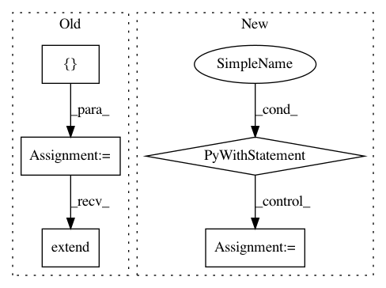

ecec43ee2dd7d21a08d68d00c668ea54bde03672,scripts/tf_cnn_benchmarks/benchmark_cnn.py,BenchmarkCNN,_run_eval,#BenchmarkCNN#,1600
Before Change
target = ""
local_var_init_op = tf.local_variables_initializer()
table_init_ops = tf.tables_initializer()
variable_mgr_init_ops = [local_var_init_op]
if table_init_ops:
variable_mgr_init_ops.extend([table_init_ops])
with tf.control_dependencies([local_var_init_op]):
variable_mgr_init_ops.extend(self.variable_mgr.get_post_init_ops())
local_var_init_op_group = tf.group(*variable_mgr_init_ops)
summary_op = tf.summary.merge_all()
After Change
target = ""
// TODO(huangyp): Check if checkpoints haven"t updated for hours and abort.
while True:
with tf.Session(
target=target, config=create_config_proto(self.params)) as sess:
image_producer = None
try:
global_step = load_checkpoint(saver, sess, self.params.train_dir)
image_producer = self._initialize_eval_graph(
graph_info.enqueue_ops, graph_info.input_producer_op,
graph_info.local_var_init_op_group, sess)
except CheckpointNotFoundException:
log_fn("Checkpoint not found in %s" % self.params.train_dir)
else: // Only executes if an exception was not thrown
self._eval_once(sess, summary_writer, graph_info.fetches,
graph_info.summary_op, image_producer, global_step)
if image_producer is not None:
image_producer.done()
if self.params.eval_interval_secs <= 0:
break
time.sleep(self.params.eval_interval_secs)
return {}
def _build_eval_graph(self, scope_name=None):
Build the evaluation graph.
In pattern: SUPERPATTERN
Frequency: 4
Non-data size: 5
Instances
Project Name: tensorflow/benchmarks
Commit Name: ecec43ee2dd7d21a08d68d00c668ea54bde03672
Time: 2018-10-08
Author: reedwm@google.com
File Name: scripts/tf_cnn_benchmarks/benchmark_cnn.py
Class Name: BenchmarkCNN
Method Name: _run_eval
Project Name: GoogleCloudPlatform/PerfKitBenchmarker
Commit Name: 6a3988c73af1b0fc8c9a880eb26f8606ebd32ad2
Time: 2015-07-01
Author: carlos.torres@rackspace.com
File Name: perfkitbenchmarker/rackspace/rackspace_virtual_machine.py
Class Name: RackspaceVirtualMachine
Method Name: _Create
Project Name: pantsbuild/pants
Commit Name: 9a7981e7680543d5ca733de31bc8ea3173e5ce2b
Time: 2013-04-09
Author: markcc@foursquare.com
File Name: src/python/twitter/pants/tasks/java_compile.py
Class Name: JavaCompile
Method Name: execute_single_compilation
Project Name: recipy/recipy
Commit Name: 27aebd9429cd624a0dada25b9685ffc7af444919
Time: 2016-09-22
Author: michaelj@epcc.ed.ac.uk
File Name: integration_test/process.py
Class Name:
Method Name: execute_and_capture